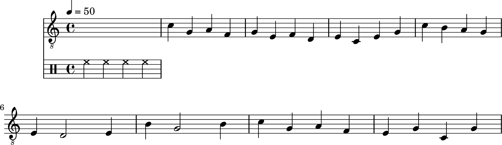
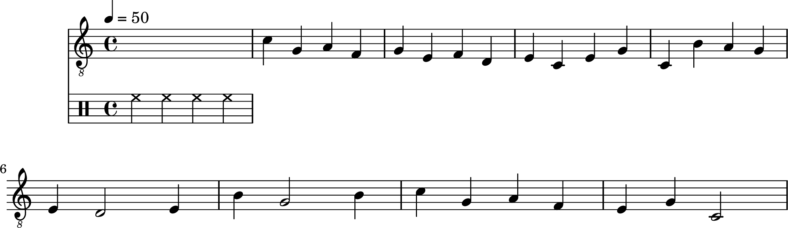
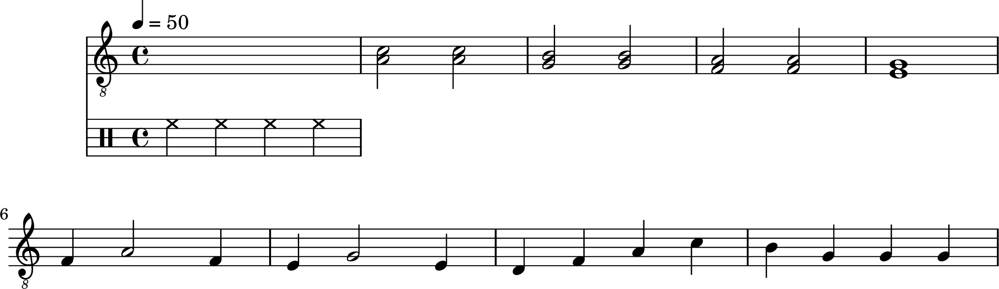
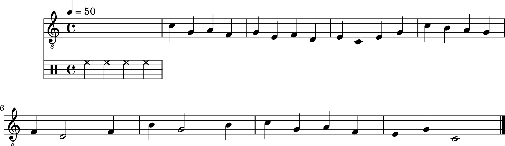

9787103037393
2021-01-03
Reading
注意
以下乐谱版权属原书版权方，仅供个人学习研究，勿作他用。
Sea to Sea
吉他一：
吉他二：




评论
如果你有任何意见，请在此评论。 如果你留下了电子邮箱，我可能会通过 回复你。
Yes silver bullet here.
笔记
博客
手册
随记
收集室
关于
![\version "2.20.0"
\header {
title = "Sea to Sea, Guitar 2"
composer = "A Mordern Method for Guitar"
}
symbols = {
\time 4/4
\tempo 4 = 50
\drums { hh4 hh hh hh }
% 1
c'4 g a f
g4 e f d
e4 c e g
c'4 b a g \break
% 4
e4 d2 e4
b4 g2 b4
c'4 g a f
e4 g c g \break
% 8
c'4 g a f
g4 e f d
e4 c e g
c4 b a g \break
% 12
e4 d2 e4
b4 g2 b4
c'4 g a f
e4 g c2 \break
% 16
<c' a>2 <c' a>
<b g>2 <b g>
<a f>2 <a f>
<g e>1 \break
% 20
f4 a2 f4
e4 g2 e4
d4 f a c'
b4 g g g \break
% 24
c'4 g a f
g4 e f d
e4 c e g
c'4 b a g \break
% 28
f4 d2 f4
b4 g2 b4
c'4 g a f
e4 g c2 \bar "|."
}
\score {
<<
\new Staff \with {midiInstrument = "acoustic guitar (nylon)"} {
\clef "G_8"
\symbols
}
>>
\midi { }
\layout { }
}](../../.././_lilypond/dabaa2d1ca304c49329623211baa3cdbc1388173/music.png)